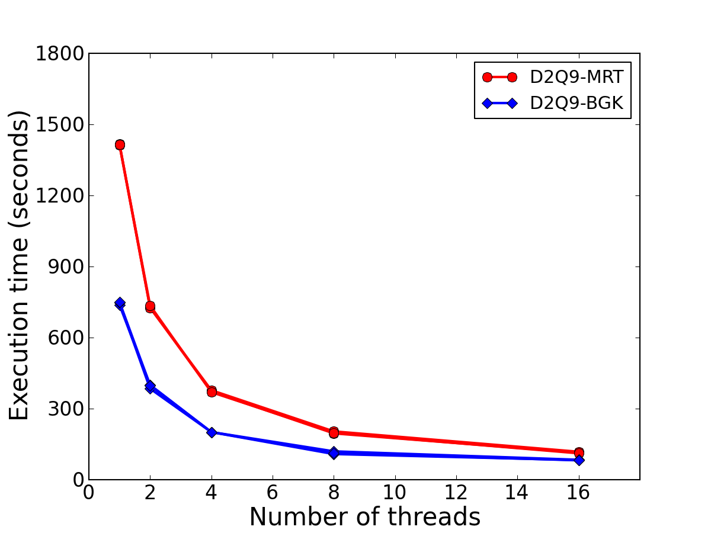
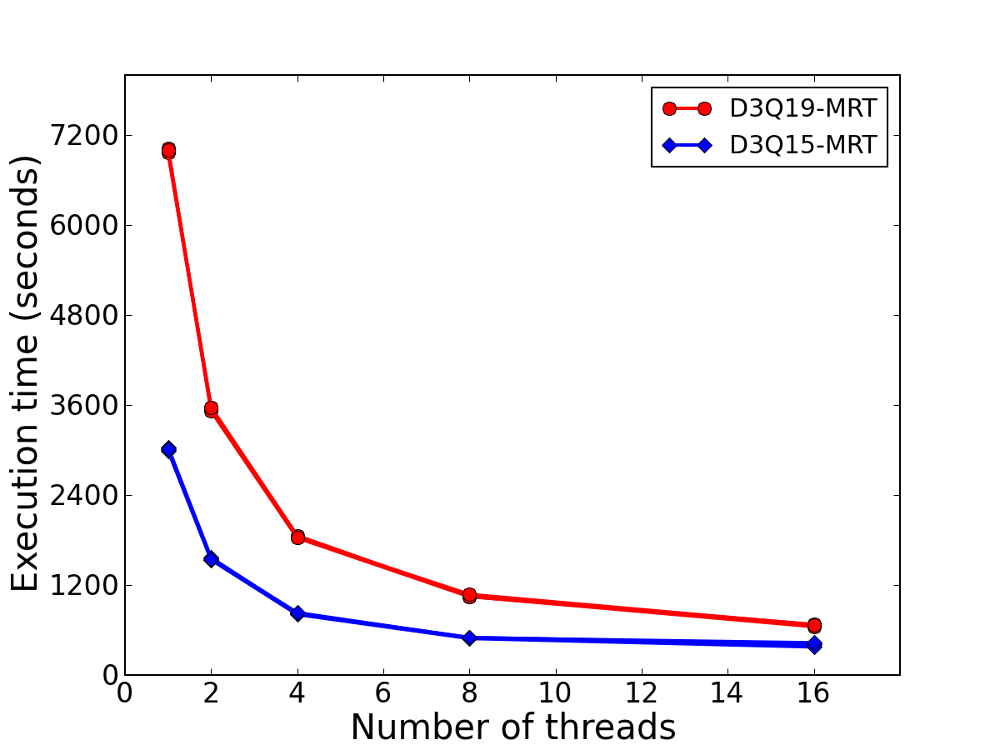

Open Multi-Processing (OpenMP) Open Multi-Processing (OpenMP) is an application programming interface (API) that supports shared memory multiprocessing programming. It fits shared-memory parallel computers (SMPs). Sample OpenMP code Calculate Pi Compile Below is examples of adding compiler flag to various compilers in OpenMP code: $ ifort -qopenmp -O2 calPi_OpenMP.F90 -o calPi $ pgf90 -mp calPi_OpenMP.F90 -o calPi $ gfortran -fopenmp -O2 -fcheck=all calPi_OpenMP.F90 -o calPi On Tianhe-2, job.sh file: #!/bin/bash module load intelcompiler/18.0.0 yhrun -N 1 -n 1 -c 24 -p bigdata ./calPi Running: yhbatch -N 1 -p bigdata ./job.sh To set the number of running treads, one may set the enviroment variables as export OMP_NUM_THREADS=4 && ./calPi or use conditional compilation as #ifdef _OPENMP call OMP_set_num_threads(2) myMaxThreads = OMP_get_max_threads() write(*,*) "Max Running threads=",myMaxThreads #endif The preprocessing is activated with a compile-time flag, i.e., -cpp for gfortran, -fpp for ifort. Another trick is simply change the file name from *.f90 to *.F90. OpenMP in lattice Boltzmann method Standard lattice Boltzmann method (LBM) mainly contains three parts: collision, streaming, and calculating macroscopic variables. The first and the last parts are quite easy to parallelize, due to the space locality of the numerical algorithm. As a matter of fact, a PARALLEL DO construct is enough. In streaming step, the distribution function exchange the information with its neighboring node. Example: Lid driven cavity flow In 2D test, the mesh size 1024*1024, and the iterative time is 10000; In 3D test, the mesh size 128*128*128, and the iterative time is 10000. Each case is repeated 3 times to reduce the random error. The operating system is Linux, and the compiler is ifort.   Speedup and Efficiency The code scales to 16 threads while maintaining parallel efficiency above 50%. However, further increasing the number of threads lead to subtitle performance optimization (or may even degrade the speedup due to the overhead). High performance computing techniques (Read more...) Open Multi-Processing (OpenMP) Message Passing Interface (MPI) Open Accelerators (OpenACC)